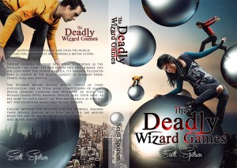
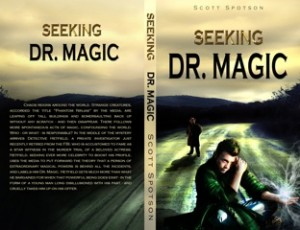

From the journal
Magic Realism Blog Hop!
#magicrealism #fantasy
What does magic realism mean to you? Think of The Life of Pi or Like Water For Chocolate, where fantasy elements are introduced in real world settings. Thus, no separate fantasy world is created, but rather the bursts of magic—whatever its intended effects—are used by an author to highlight suspense or to underscore a novel’s theme. For Pi, for example, the figure of Richard Parker, the lion, was the embodiment of his fears and horror of surviving a horrendous voyage where his loved ones died.
Similarly, some of my works—while certainly not as extensive in societal themes as those of the classics mentioned above—incorporate some magic realism. For example, in The Deadly Wizard Games by Scott Spotson, the old world order in today’s world is overthrown when a band of powerful wizards seize control. In Delusional, an earnest marketing executive’s life is upended when she experiences hallucinations that can’t be explained away to any psychosis, and increasingly zero in on her deepening relationship with a married man at her work. And in Seeking Dr. Magic, a wizard startles the world by secretly unleashing his magic on a world that does not yet know of its real-life existence.
Zoe Brooks is an author who specializes in magic realism and this weekend is hosting a magic realism blog hop that you can enjoy. She also hosts the magic realism blog which you can also check out as follows; http://magic-realism-books.blogspot.com
She was formerly a moderator for the magic realism discussion group on Goodreads: https://www.goodreads.com/group/show/2281-magic-realism
Thank you, Zoe!

What does magic realism mean to you? Think of The Life of Pi or Like Water For Chocolate, where fantasy elements are introduced in real world settings. Thus, no separate fantasy world is created, but rather the bursts of magic—whatever its intended effects—are used by an author to highlight suspense or to underscore a novel’s theme. For Pi, for example, the figure of Richard Parker, the lion, was the embodiment of his fears and horror of surviving a horrendous voyage where his loved ones died.
Similarly, some of my works—while certainly not as extensive in societal themes as those of the classics mentioned above—incorporate some magic realism. For example, in The Deadly Wizard Games by Scott Spotson, the old world order in today’s world is overthrown when a band of powerful wizards seize control. In Delusional, an earnest marketing executive’s life is upended when she experiences hallucinations that can’t be explained away to any psychosis, and increasingly zero in on her deepening relationship with a married man at her work. And in Seeking Dr. Magic, a wizard startles the world by secretly unleashing his magic on a world that does not yet know of its real-life existence.
Zoe Brooks is an author who specializes in magic realism and this weekend is hosting a magic realism blog hop that you can enjoy. She also hosts the magic realism blog which you can also check out as follows; http://magic-realism-books.blogspot.com
She was formerly a moderator for the magic realism discussion group on Goodreads: https://www.goodreads.com/group/show/2281-magic-realism
Thank you, Zoe!

